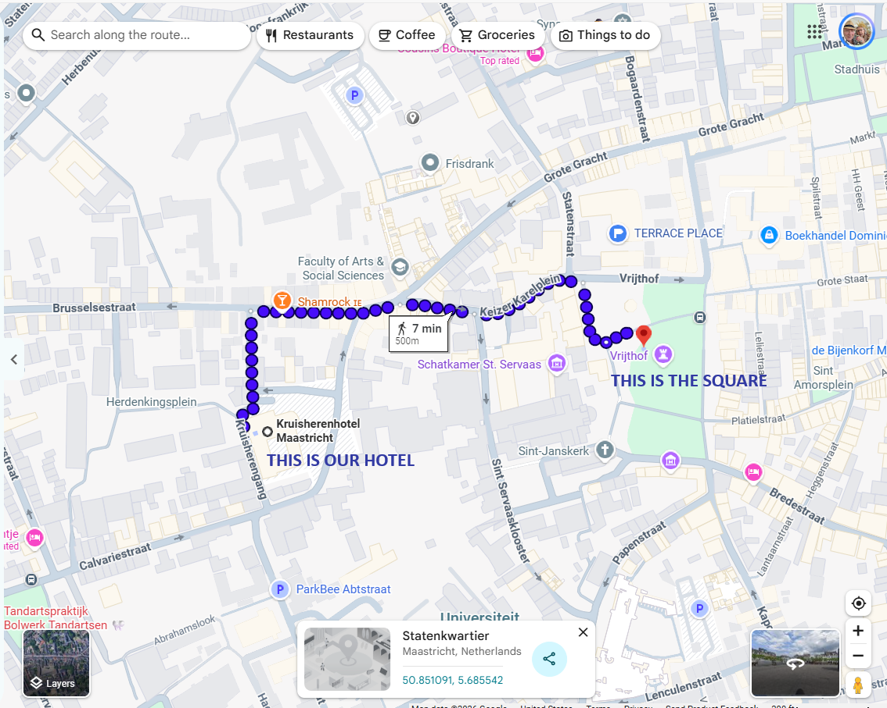

|
 |
Walking Directions from the hotel to the squareKruisherenhotel MaastrichtKruisherengang 19-23, 6211 NW Maastricht, Netherlands Head toward Herdenkingsplein 120 m Turn right onto Brusselsestraat 130 m Slight right onto Oude Tweebergenpoort 71 m Continue straight onto Keizer Karelplein 98 m Turn right onto Vrijthof |